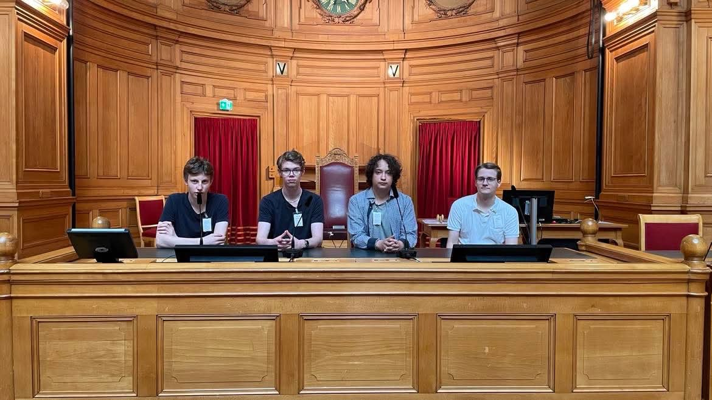

Om oss
Vad är SK Cirkus?
SK Cirkus är en nybildad schackklubb som skapades 2025 av juniorer för juniorer. Vi planerar att ha klubbtävlingar men också arrangera öppna tävlingar.
Vi vill också arrangera schackläger och liknande aktiviteter för att stärka svenska juniorer!
Se ELO-listaStyrelse
Ledning
Ordförande
Filip Dingertz
Vice ordförande
Jacob Hanini
Styrelseledamot
Simon Lindström

SK Cirkus · 2025